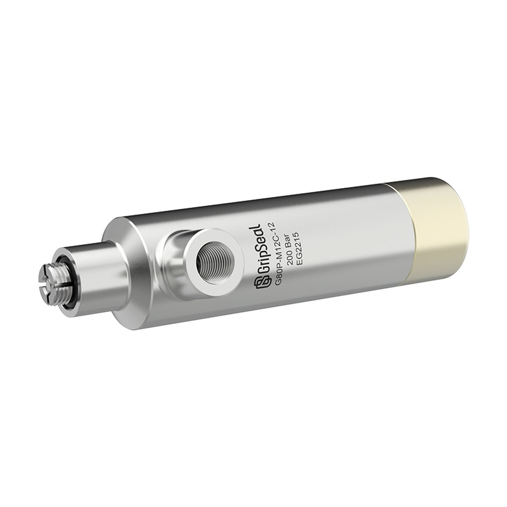
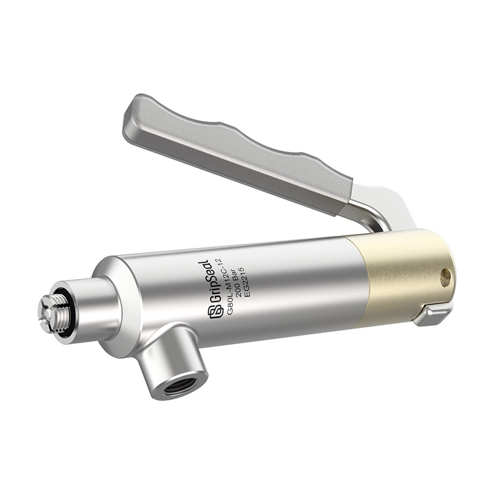

Model overview
One-second connection on internal threads
Choose the G80 route when an internal-thread part needs fast sealing without repeatedly screwing a test hose or adaptor into the port.
At a Glance
Get G80 Selection Support
Typical scenarios
Consider this series when takt, thread protection and repeated sealing matter more than a low-cost threaded adaptor.